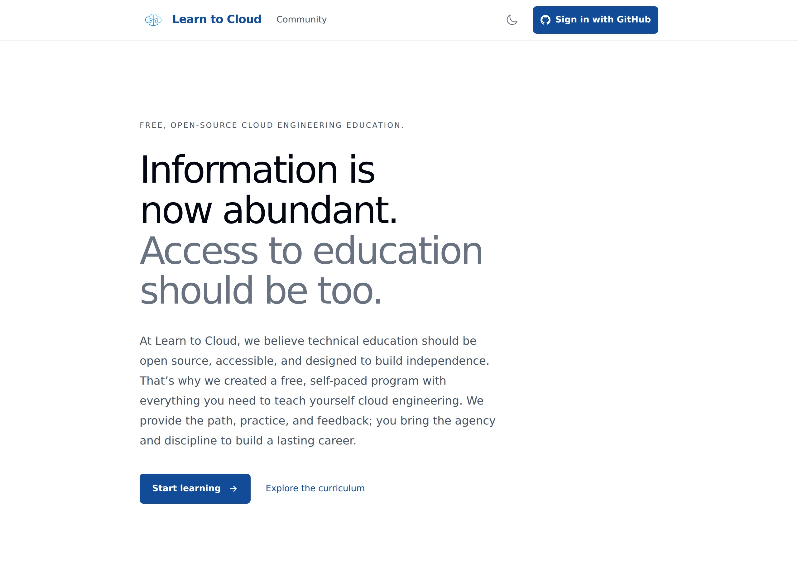
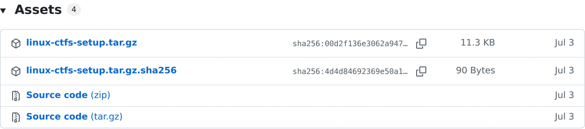

Learn to Cloud / A story built on GitHub
Building
a ladder.
From a GitHub repository
to a path into cloud engineering.
Gwyneth Peña-Siguenza / Learn to Cloud
01 An idea
02 A repository
03 An opportunity
One repository became a learning community
Learn
to Cloud.
9,000+
registered learners
Free. Open source.
Built for independence.
learntocloud.guide ↗
● ● ● learntocloud.guide

Learn to Cloud / public home page
The things that dictate what we build
Three constraints.
A lot of decisions.
01 / Our time
Two core
contributors.
Building and maintaining
in our spare time.
Less maintenance
02 / Our model
No
monetization.
Sustain the platform.
Keep it inexpensive.
Low platform cost
03 / Our learners
More than
technical skills.
Structure. Momentum.
Independence.
Learner growth
Step zero / Signing up
Momentum from login.
For usLess
maintenance
For learnersA first
step forward
One
login.
What GitHub feature helps us do both?
GitHub OAuth
The boring answer.
A useful first step.
For us No password system to build.
For learners An account they'll keep using.
We still own app sessions and access control.
The actual entry point / learntocloud.guide
Our OAuth configuration / excerpt
oauth.register(
name="github",
client_kwargs={"scope": "read:user"},
)
More than a login button
Structure through
real work.
01Learn
Material with direction.
→
02Do
Work that looks like work.
→
03Verify
Feedback to move forward.
Each phase builds on the previous one.
Phase 0 / GitHub repositories
A first real workflow.
Create→Clone→Change→Push
Profile repository / illustrative checkpoint
github.com/
username/username
☰ README.md
A place to introduce yourself.
✓
"I made something.
I pushed it."
Check that the repository exists.
Not how impressive the introduction is.
Linux + networking / Lab repositories
Deploy it. Investigate it.
Clean it up.
GitHubLab code
Read it.
Inspect it.
Deploy it.
→
The learner's cloud account / Scenario
Frontend✕Backend
Why can't these talk?
Commands → documentation → configuration → retry
Independence A defined challenge. Not every step of the solution.
Phase 3 / Pull requests + labels + GitHub Actions
Structure while
they build.
A journal API. A repeatable development process.
01Branch
A focused change.
02Implement
Build the behavior.
03Open a PR
Make work reviewable.
04Add a label
Select the assignment.
05Investigate
Learn from the checks.
06Review + merge
Take the next step.
GitHub Actions / One assignment, one feedback loop
Small change.
Concrete feedback.
The assignment
GET /entries/{entry_id}
200Entry exists
404Entry doesn't exist
task:get-entry
What the checks cover / Diagram
This exercise + preceding exercises
Code quality + existing behavior
Not exercises they haven't reached
Read logs → Investigate → Push a fix
We almost built an AI grader. For these requirements, we wrote tests.
Switching perspectives / GitHub Releases
Deliver the labs.
Not everyone's machines.
We maintain
Code → Tag → Package
GitHub Actions publishes
to GitHub Releases.
Learners operate
Download → Deploy
Real infrastructure.
In their own cloud accounts.

linux-ctfs-setup.tar.gz
linux-ctfs-setup.tar.gz.sha256
linux-ctfs / v0.1.8 release assets ↗
GitHub Copilot / Maintaining the labs
Don't fix
the assignment.
Broken infrastructure
can be the lesson.
Keep dependencies current.
Keep the intended challenge.
Maintenance, not curriculum design
review-lab-maintenance / Instruction excerpt
Preserve intentional misconfigurations. Establish each incident's intended fault from the guides and implementation before flagging it as a problem.
Copilot Inspect + report
Maintainers Decide what to fix
Read the maintenance skill ↗
GitHub Copilot / Dogfooding the app
Working isn't
always usable.
A page can load perfectly and still leave you guessing.
01 / Give it a goalUse the app.
Follow the links a learner
can actually see.
02 / Separate the findingsDefect ≠ friction.
A server error isn't the same
as an unclear next step.
03 / Require evidenceReport honestly.
Show what happened.
Say what wasn't exercised.
Another pair of eyes Not a replacement for learner feedback.
The goal is for learners to need us less
Less waiting.
More "I can
keep going."
Structure.
Momentum.
Independence.